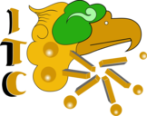

<header class="flex-center-sb-row">
    <div class="flex-center-center-column logo">
        
    </div>
    
    <nav class="flex-center-sb-row">
    @if(isAuth()){
            @if(isTeacher()){
                <li routerLink="/docente/lista-grupos" routerLinkActive="menu-selected">
                    <svg fill="none" stroke-linecap="round" stroke-linejoin="round" stroke-width="1.5" viewBox="0 0 24 24" xmlns="http://www.w3.org/2000/svg">
                        <path d="M17 21v-2a4 4 0 0 0-4-4H5a4 4 0 0 0-4 4v2"></path>
                        <path d="M9 3a4 4 0 1 0 0 8 4 4 0 1 0 0-8z"></path>
                        <path d="M23 21v-2a4 4 0 0 0-3-3.87"></path>
                        <path d="M16 3.13a4 4 0 0 1 0 7.75"></path>
                    </svg>
                    <a class="small">Grupos</a>
                </li>
                <li routerLink="/docente/historial-grupos" routerLinkActive="menu-selected">
                    <svg fill="none" stroke-linecap="round" stroke-linejoin="round" stroke-width="1.5" viewBox="0 0 24 24" xmlns="http://www.w3.org/2000/svg">
                        <path d="M2 3h6a4 4 0 0 1 4 4v14a3 3 0 0 0-3-3H2z"></path>
                        <path d="M22 3h-6a4 4 0 0 0-4 4v14a3 3 0 0 1 3-3h7z"></path>
                    </svg>
                    <a class="small">Historial</a>
                </li>
            }
    
            @if(isAdmin()){
                <li routerLink="/administrador/periodos" routerLinkActive="menu-selected">
                    <svg fill="none" stroke-linecap="round" stroke-linejoin="round" stroke-width="1.5" viewBox="0 0 24 24" xmlns="http://www.w3.org/2000/svg">
                        <rect width="18" height="18" x="3" y="4" rx="2" ry="2"></rect>
                        <path d="M16 2v4"></path>
                        <path d="M8 2v4"></path>
                        <path d="M3 10h18"></path>
                    </svg>
                    <a class="small">Periodos</a>
                </li>
                <li routerLink="/administrador/materias" routerLinkActive="menu-selected">
                    <svg fill="none" stroke-linecap="round" stroke-linejoin="round" stroke-width="1.5" viewBox="0 0 24 24" xmlns="http://www.w3.org/2000/svg">
                        <path d="M4 19.5A2.5 2.5 0 0 1 6.5 17H20"></path>
                        <path d="M6.5 2H20v20H6.5A2.5 2.5 0 0 1 4 19.5v-15A2.5 2.5 0 0 1 6.5 2z"></path>
                    </svg>
                    <a class="small">Materias</a>
                </li>
                <li routerLink="/administrador/docentes" routerLinkActive="menu-selected">
                    <svg fill="none" stroke-linecap="round" stroke-linejoin="round" stroke-width="1.5" viewBox="0 0 24 24" xmlns="http://www.w3.org/2000/svg">
                        <path d="M7 7a2 2 0 1 0 0-4 2 2 0 0 0 0 4Z"></path>
                        <path d="M5 22v-5l-1-1v-4a1 1 0 0 1 1-1h4a1 1 0 0 1 1 1v4l-1 1v5"></path>
                        <path d="M17 7a2 2 0 1 0 0-4 2 2 0 0 0 0 4Z"></path>
                        <path d="M15 22v-4h-2l2-6a1 1 0 0 1 1-1h2a1 1 0 0 1 1 1l2 6h-2v4"></path>
                    </svg>
                    <a class="small">Docentes</a>
                </li>
            }
            <li (click)="toggleTheme()">
                @if(!darkTheme()){
                    <svg fill="none" stroke-linecap="round" stroke-linejoin="round" stroke-width="1.5" viewBox="0 0 24 24" xmlns="http://www.w3.org/2000/svg">
                        <path d="M21 12.79A9 9 0 1 1 11.21 3 7 7 0 0 0 21 12.79Z"></path>
                    </svg>
                }@else if(darkTheme()){
                    <svg fill="none" stroke-linecap="round" stroke-linejoin="round" stroke-width="1.5" viewBox="0 0 24 24" xmlns="http://www.w3.org/2000/svg">
                        <path d="M12 16a4 4 0 1 0 0-8 4 4 0 0 0 0 8Z"></path>
                        <path d="m6.3 17.7-.7.7M3 12h1-1Zm9-9v1-1Zm8 9h1-1Zm-8 8v1-1ZM5.6 5.6l.7.7-.7-.7Zm12.8 0-.7.7.7-.7Zm-.7 12.1.7.7-.7-.7Z"></path>
                    </svg>
                }
                <a class="small">Tema</a>
            </li>
            <li (click)="logOut()">
                <svg fill="none" stroke-linecap="round" stroke-linejoin="round" stroke-width="1.5" viewBox="0 0 24 24" xmlns="http://www.w3.org/2000/svg">
                    <path d="M9 21H5a2 2 0 0 1-2-2V5a2 2 0 0 1 2-2h4"></path>
                    <path d="m16 17 5-5-5-5"></path>
                    <path d="M21 12H9"></path>
                </svg>
                <a class="small">Salir</a>
            </li>
    }@else {
        <li (click)="toggleTheme()">
            @if(!darkTheme()){
                <svg fill="none" stroke-linecap="round" stroke-linejoin="round" stroke-width="1.5" viewBox="0 0 24 24" xmlns="http://www.w3.org/2000/svg">
                    <path d="M21 12.79A9 9 0 1 1 11.21 3 7 7 0 0 0 21 12.79Z"></path>
                </svg>
            }@else if(darkTheme()){
                <svg fill="none" stroke-linecap="round" stroke-linejoin="round" stroke-width="1.5" viewBox="0 0 24 24" xmlns="http://www.w3.org/2000/svg">
                    <path d="M12 16a4 4 0 1 0 0-8 4 4 0 0 0 0 8Z"></path>
                    <path d="m6.3 17.7-.7.7M3 12h1-1Zm9-9v1-1Zm8 9h1-1Zm-8 8v1-1ZM5.6 5.6l.7.7-.7-.7Zm12.8 0-.7.7.7-.7Zm-.7 12.1.7.7-.7-.7Z"></path>
                </svg>
            }
            <a class="small">Tema</a>
        </li>
    }
</nav>
</header>